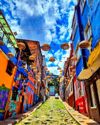
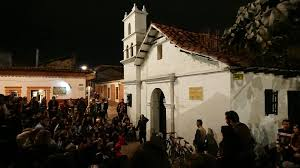

El Chorro de Quevedo es uno de los lugares más antiguos y emblemáticos de Bogotá. Considerado como el punto de fundación de la ciudad por Gonzalo Jiménez de Quesada en 1538, este rincón histórico está rodeado de callejones coloniales, artistas callejeros, y una vibrante vida cultural.
Ubicación
Dirección: Calle 13 #2-98, Bogotá, Colombia.
Coordenadas: 4.5966° N, 74.0759° W
¿Cómo llegar?
- A pie: A pocos pasos de la Plaza de Bolívar y la Candelaria.
- TransMilenio: Estación Las Aguas o Museo del Oro.
- Bus: Rutas SITP por la Avenida Jiménez o Carrera 3.
Horarios
- Abierto al público: Todos los días, 24 horas.
- Recomendado: Visitar en la tarde o al atardecer para disfrutar del ambiente cultural.
Entrada
- 🔸 Acceso libre: Entrada gratuita para todo el público.
- 🔸 Actividades culturales: Eventos ocasionales, cuentería, música y arte urbano.

